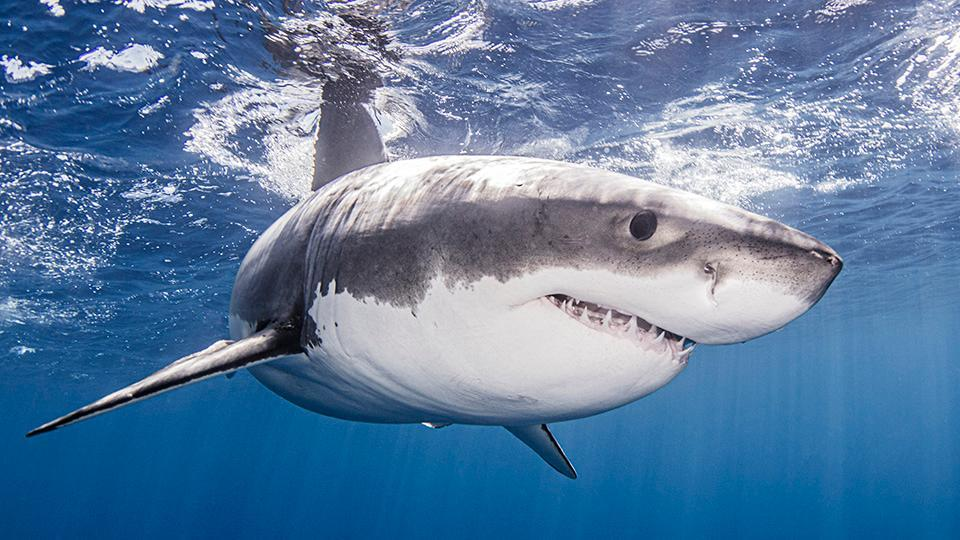

DESCRIPCION:
El tiburón blanco (Carcharodon carcharias) es un depredador marino icónico que habita en aguas templadas y tropicales alrededor del mundo. Prefiere aguas costeras, aunque puede adentrarse en el océano abierto. Su hábitat incluye áreas como las costas de Sudáfrica, Australia, California y el Mediterráneo. Como depredador tope, juega un papel crucial en los ecosistemas marinos, cazando una variedad de presas, incluyendo peces pelágicos y mamíferos marinos como focas y leones marinos. Utiliza su aguda visión y sentido del olfato para localizar presas y su velocidad para emboscarlas desde las profundidades o atacar desde abajo. Se cree que realiza migraciones estacionales, moviéndose hacia aguas más cálidas en invierno y regresando a aguas más frías durante el verano.
CARACTERISTICAS:
- Formidable depredador: El tiburón blanco es un depredador tope, lo que significa que se encuentra en la cima de la cadena alimentaria marina y juega un papel crucial en el control de poblaciones de presas en los ecosistemas marinos.
- Mandíbulas poderosas: Posee una mandíbula repleta de dientes serrados y afilados, diseñados para desgarrar y triturar la carne de sus presas con facilidad.
- Hábitat diverso: Aunque prefiere aguas costeras, puede encontrarse en una variedad de hábitats marinos, desde aguas templadas hasta tropicales, y desde la costa hasta el océano abierto.
- Migraciones estacionales: Se cree que realiza migraciones estacionales, moviéndose hacia aguas más cálidas durante los meses más fríos y regresando a aguas más frías durante el verano.
- Vital para el ecosistema: Como depredador tope, el tiburón blanco desempeña un papel importante en mantener el equilibrio de los ecosistemas marinos al regular las poblaciones de presas y contribuir a la salud general del océano.
